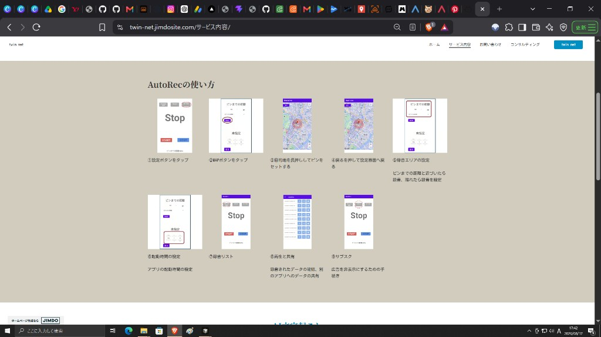

GPS録音アプリ「AutoRec」の基本的な設定手順です。地図で録音エリアを指定し、近づいたら録音開始・離れたら録音停止といった使い方ができます。

GPSによる自動録音の設定
-
① 設定ボタンをタップ
アプリのメイン画面右上の設定（歯車）アイコンをタップします。
-
② MAPボタンをタップ
「ピンまでの距離」などの設定画面で「MAP」ボタンをタップし、地図画面を開きます。
-
③ 目的地を長押ししてピンをセットする
地図上で録音したい場所を長押しし、ピンをセットします。ピンを中心に録音エリアの円が表示されます。
-
④ 戻るを押して設定画面へ戻る
地図画面左上の「戻る」をタップし、設定画面に戻ります。
-
⑤ 録音エリアの設定
ピンまでの距離を設定します。設定した距離まで近づいたら録音を開始し、離れたら録音を停止します。
タイマーによる起動時間の設定
-
⑥ 起動時間の設定
アプリの起動時間（開始・終了）を設定できます。必要な時間帯だけ動作させたいときに便利です。
録音データの確認・共有
-
⑦ 録音リスト
メイン画面左上のリストアイコンをタップすると、録音済みデータの一覧を確認できます。
-
⑧ 再生と共有
録音リストから再生したり、別のアプリへデータを共有したりできます。
広告の非表示（サブスク）
-
⑨ サブスク
メイン画面上部のアイコンから、広告を非表示にするための手続きができます。
ご注意：録音の利用は、各国・各地域の法律に従ってください。位置情報・マイクの権限がオフになっている場合は、端末の設定から許可してください。
関連ページ： GPS録音アプリ / AutoRec プライバシーポリシー